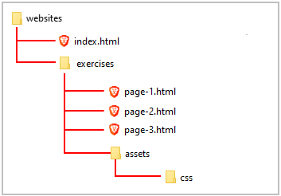
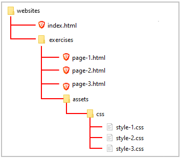
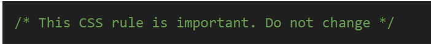
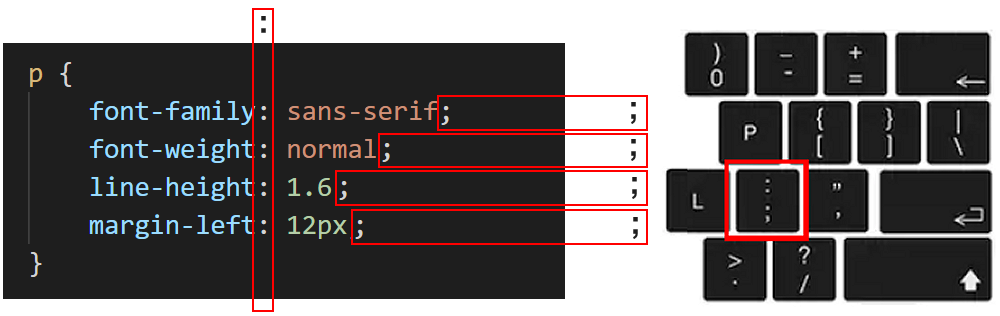
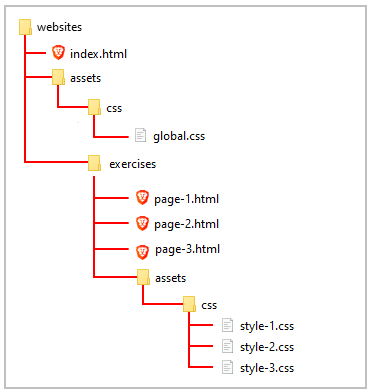
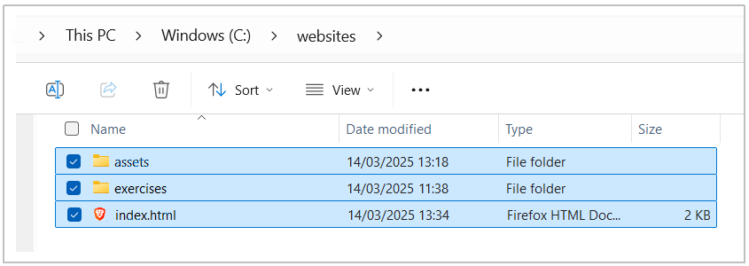

Learning Goals
At the end of this Tutorial you will be able to:
- Understand the basic structure of a CSS stylesheet.
- Understand these CSS terms: selector, declaration block, style rule, property and value.
- Recognise the most commonly used CSS properties in web design.
- Download a CSS file from the Internet.
- Link HTML web pages to CSS stylesheet files.
- Update the style rules in a CSS file and view the effect on a linked web page.
Introduction to CSS
CSS stands for Cascading Style Sheets. While HTML provides the structure and content of a web page, CSS controls how that content looks and is laid out on the screen. CSS enables you to:
- Change colours, fonts, and text sizes
- Create layouts with multiple columns
- Add animations and visual effects
- Adapt the display for different devices and screen sizes.
Applying your own styles to your web pages
In the previous Working with HTML Tutorial, you added markup tags such as <h1> and <h2> to the text of your sample HTML files.
When you saved your files and displayed them in a web browser, you could see the text styled with headings, sub-headings and paragraphs.

Where did these styles come from?
The answer is that these are default styles created by the web browser.
To create and apply your own styles to a web page, you need to follow these steps:
- Create a CSS file (stylesheet).
- In the CSS file, create your styles for headings, paragraphs and so on.
- And, in the <head> of your web page, add a link to your CSS file.
Creating your assets and css sub-folders
Web designers use the word assets to describe those files which are used by web pages, but which are not themselves HTML files. Assets typically include stylesheets (CSS files), images (JPG, PNG or WEBP files), audio tracks (MP3 files), videos (MP4 files), Adobe Acrobat documents (PDF files) and JavaScript code (JS files).
In a well-organised website structure, asset files are stored in various sub-folders of a main assets sub-folder.

Before downloading the sample stylesheet files for this Tutorial, you need to create a sub-folder structure to store them.
For Microsoft Windows users, here are the steps:
- Open File Explorer, display your ‘main’ 📁 websites folder and then your 📁 exercises sub-folder inside it.
- In the blank space at the right side, right-click and choose New | New folder from the context menu.

- Give your new folder the name assets.


DO NOT type upper-case letters. Type assets.
DO NOT type 'Assets' or 'ASSETS'.
- Next, click your new 📁 assets sub-folder folder to select it.
- Right-click anywhere in the empty sub-folder and choose New | New folder from the context menu.
Give your new sub-folder the name css.

DO NOT type upper-case letters. Type css.
DO NOT type 'Css' or 'CSS'.
✅ That’s it. You have now created a sub-folder structure to store the stylesheet files you will download.
Downloading your sample CSS files
Now you will download a stylesheet file for your sample page-1.html web page. Here are the steps.
- In your web browser, click the following link: style-1.css This stylesheet file will open in a new tab of your web browser.
- Right-click anywhere in the browser window, and from the context menu, choose Save as... (Brave or Chrome).
- Save the style-1.css stylesheet file in your 📁 websites/exercises/assets/css sub-folder.

- Check that your 📁 websites sub-folder structure now looks as shown below.
- Repeat the above steps for these two other stylesheet files. style-2.css style-3.css
Your complete folder and file structure should now look as shown below.
You will now work with these CSS files along with their corresponding HTML web page files.
Linking your CSS files to your HTML files
You have three sample web pages (HTML files) and three sample stylesheets (CSS files).
Your next task is to link each sample web page to its sample stylesheet. This link is created inside the <head> tag of the web page.
Follow the steps below:
- In VS Code, open the page-1.html file.
- In the <head> of the page-1.html file, at the end of the description details, click with the mouse and press the Enter key to open a new, blank line.
 Click at the beginning of this new line, press the lower-case letter l key to display a pop-up menu.
Click at the beginning of this new line, press the lower-case letter l key to display a pop-up menu.

- Click the link:css option with the mouse, or press either the Enter or Tab key to select it.
VS Code adds the stylesheet link code to your web page.

- As you can see, VS Code gives the default name of style.css to the linked stylesheet file.
Edit the folder location and file name to:
assets/css/style-1.css
The <head> section of your web page should now look as shown below.
DO NOT type the name of the stylesheet file with an upper-case ‘S’ as in Style-1.css.
DO NOT use some other mixture of upper and lower-case letters, such as STYLE-1.CSS or style-1.CSS or whatever.
DO NOT enter any blank spaces in the name of your file such as style- 1.css or style -1.css.

- Save your page-1.html file. Your page-1.html web page is now linked to your style-1.css stylesheet file.
- Repeat the above steps for page-2.html and style-2.css

- Repeat the above steps for page-3.html and style-3.css

Display your three web pages in a web browser. They should look differently after linking them to their stylesheet file. For example, the top part of page-1.html should look similar to the following.
The structure of a CSS file
Some CSS files are only 30-50 lines long. Others may have as many as 50,000 lines. In every case, they all have a similar structure.
Display any one of the three sample CSS files on VS Code and you will see they contain the following parts:
- Web browser resets: This ensure that stylesheet rules work consistently on different web browsers, such as Google Chrome, Apple Safari, Brave and so on. You will (almost) never need to change these.
- Custom properties: Also known as CSS variables, these are user-defined values that you can reuse throughout your stylesheets. They are enclosed inside a pair of curly braces {}. Most of these are 'standard' and you will rarely need to change them.
- Layout for content containers: Some general rules that apply to all container/semantic elements. Again, you should rarely need to change these.
- Header layout: Rules that apply only to the one <header> element in the linked web page. You will probably want to edit these for different web pages.
- Section Layout: Rules that apply to all the <section> elements in the linked web page You may want to edit these for different web pages.
- Typography: Rules that apply to text content, such as <h1>, <h2>, <h3> and <p. These rules will include text size, font-family, colours, and spacing. Again, you may want to edit these for different web pages.
For simplicity, the three sample web pages and stylsheets do not include rules for the <nav> and <footer> elements, and images and videos.
Comments in CSS files
As you can see, comments in a stylesheet are written differently to comments in a web page.
- In a web page, a comment looks like this:
- In a stylesheet, a comment looks like this: 
CSS targeting with selectors
Before continuing, in VS Code open the style-1.css stylesheet and scroll down to the bottomof the file. You should see the following:
All CSS files consist of so-called selectors. You use a selector in a CSS file to ‘target’ elements in a linked web page. For example:
In the simplest case:
- The h3 selector in a CSS file will apply its styles to all <h3> sub-headings in a linked web page. It does not matter whether there is one or several <h3> elements in the web page. All will be styled by the same h2 selector in the CSS file.
- Similarly, all <p> text paragraphs in a web page will be styled by the p selector in the linked CSS file.
Declaration block and style rules
After the selector name comes what is called a declaration block. These always begin with an opening curly brace { and end with a closing curly brace }.

Inside every CSS declaration block is at least one style rule that consists of two parts:
- A property and
- A value.

Style rules must be separated from one another by a semi-colon character (;). Otherwise, the web browser cannot tell when one style rule ends and the next style rule begins.
As for the last rule before a closing curly brace, you can follow it with a semi-colon. But it is not necessary. The following two examples have exactly the same effect.
line-height: 1.6;
margin-bottom:: 12px;
}
line-height: 1.6;
margin-bottom:: 12px
}
When a selector contains just one, two or three rules, it is often typed on a single line. See the example below.
p { line-height: 1.6; letter-spacing: -2px; font-weight: bold }
Or, more simply:
p { line-height: 1.6; letter-spacing: -2px; font-weight: bold }
Styling your website home page
In this section, you will style the home page of your website. This is the index.html file in your ‚Äòmain‚Äô üìÅ websites folder.
Your home page will be just one of a number of web pages on your site that will be visually independent of your various exercise and project web pages. Other such web pages will include:
- About Me (or About Us) page: This expresses the mission/goal of the website operator, and identifies the market the website operator exists to serve.
- Projects page: This lists and summarises previous client projects, typically with hyperlinks to each one, and ideally with testimonials from satisfied clients.
- Services/Products pages: A list of products/services offered to clients, often linking to an individual web page for each product/service.
- Contact page: A contact form and other contact points (email, telephone and social media links) for prospective clients.
- Privacy page: The website’s legal and privacy policy, as required by Irish and EU law.
Follow the link below to view examples of such web pages, along with guidelines for best practices:
You will want all these web pages to have a consistent ‘look and feel’, with a common tone and with similar page layouts, colour schemes, images and fonts.
For this reason, all the pages will share a single, common stylesheet. In this and future Tutorials, this common, website-wide stylesheet is named global.css.
Creating your website assets and css sub-folders
Your first task is to create a sub-folder structure to store the stylesheet file and other assets for your home, product/service, contact and similar website pages.
For Microsoft Windows users, here are the steps:
- Open File Explorer, display your ‚Äòmain‚Äô üìÅ websites folder
- In the blank space at the right side, right-click and choose New | New folder from the context menu.
- Give your new folder the name assets.
DO NOT type upper-case letters. Type assets.
DO NOT type 'Assets' or 'ASSETS'.
- Next, click your new üìÅ assets sub-folder folder to open it.
- Right-click anywhere in the empty sub-folder and choose New | New folder from the context menu.
Give your new sub-folder the name css.
DO NOT type upper-case letters. Type css.
DO NOT type 'Css' or 'CSS'.
✅ That’s it. You have now created the necessary sub-folder structure.
Downloading your global.css stylesheet
Now you will download the stylesheet file for your home and other web pages. Here are the steps.
- In your web browser, click the following link: global.css This stylesheet file will open in a new tab of your web browser.
- Right-click anywhere in the browser window, and from the context menu, choose Save as... (Brave or Chrome).
- Save the global.css stylesheet file in your üìÅ websites/assets/css sub-folder.

✅ Task complete. Check that your complete üìÅ websites sub-folder structure now looks as shown below.
Linking your home page to your global.css stylesheet
Now, you will link your home page to the downloaded global.css stylesheet file. Currently, your home page displays as follows in your web browser.

- In VS Code, open your index.html file.
- In the <head> of the page, just before the closing </head> tag, press the Enter key to open a new, blank line, and then copy-and-paste the following stylesheet link on this new line.
<link rel="stylesheet" href="assets/css/global.css">
The <head> section of your web page should now look similar to that shown below.
- Save your index.html file.
✅ Task complete. The visual appearance of your website’s home page will now be controlled by the style rules in the linked CSS file.
Uploading your files to GitHub
Your final task is to upload your web pages and stylesheets to your account on Github.
- Open a new tab in your web browser and go to Github.com. If you are not already signed in to your Github account, sign in now.

- On your Github home page, click the name of the repository (‘repo’) that holds your web pages. Its name will look as follows, where username is your chosen username on Github.
username.github.io

- On the next Github screen displayed, near the right of the screen, you can see a button named Add file. Click on it.

- From the dropdown list displayed, choose the option Upload files.

- In File Explorer (Windows) or Finder (Apple Mac), drag-and-drop your index.html file and your üìÅ assets and üìÅ exercises sub-folders to upload them to your repository on Github. 
- Scroll down to the bottom of the Github screen, and accept or edit the short message (Add files via upload) in the Commit changes box.
- Finally, click the green Commit changes button to upload your entire exercises sub-folder and all the files it contains.

Your web pages are now published on Github at web addresses similar to the following, where username is the username you have chosen for your Github account:
https://username.github.io/index.html
– or simply –
https://username.github.io
https://username.github.io/exercises/page-1.html
https://username.github.io/exercises/page-2.html
https://username.github.io/exercises/page-3.html
It may take a few minutes for your uploaded files to appear on Github.